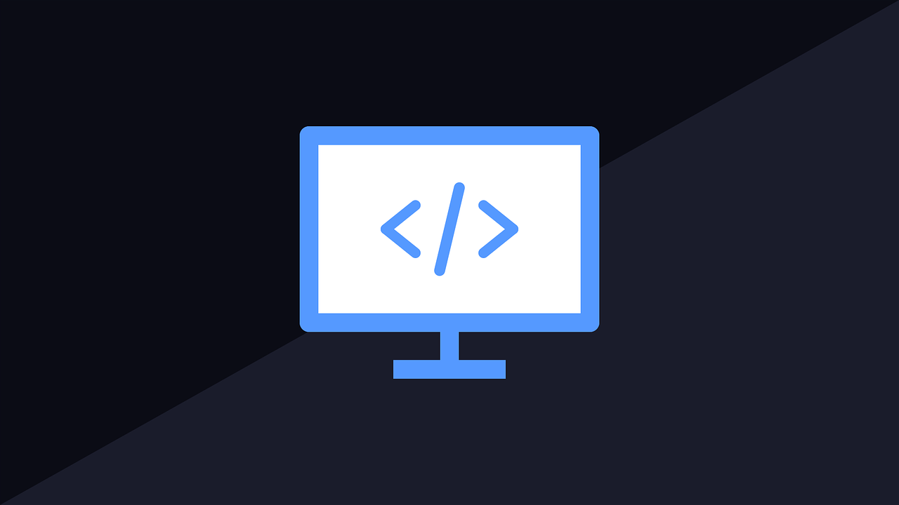
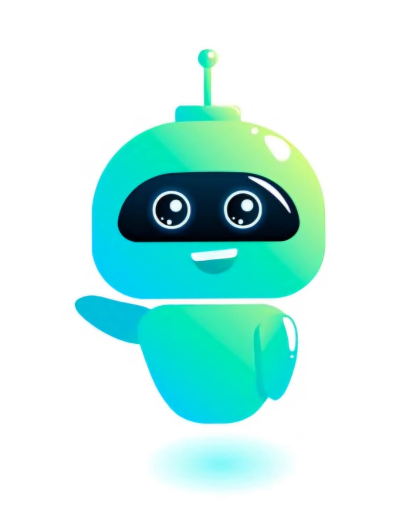

Hello! I am Amuthan, a third-year Computer Science and Engineering student at K. Ramakrishnan College of Engineering with a strong passion for full stack development. My goal is to become a proficient Java Full Stack Developer, mastering both frontend and backend technologies to create seamless, dynamic web applications.
I have a solid foundation in programming languages and frameworks, including Java, JavaScript, HTML, CSS, React.js, and Node.js. Additionally, I am skilled in database management systems such as SQL and MongoDB, as well as version control using Git. My academic journey and hands-on projects have equipped me with the skills to tackle complex development challenges and deliver high-quality solutions.
I am dedicated to continuous learning and problem-solving, always seeking opportunities to expand my knowledge and refine my technical expertise. Through my education and practical experiences, I am committed to developing the skills and knowledge necessary to excel in the ever-evolving field of full stack development.
Feel free to explore my projects and experiences showcased here. Let's connect and create something amazing together!
SKILLS
-
80%
HTML -
80%
CSS -
20%
JavaScript -
60%
Java Programming -
60%
C Programming -
20%
SQL

PROJECTS

CHATTU (AI CHATBOT)
The CHATTU AI Chatbot, developed for Tech Vaseegrah with my teammate K. Gowtham, enhances user interaction through advanced conversational AI.
I focused on creating a user-friendly frontend using HTML, CSS, JavaScript, and React.js. The project also leveraged Node.js, Express.js, Python, TensorFlow, Dialogflow, and MongoDB for dynamic, context-aware conversations.
This experience boosted my skills in frontend development and AI integration, contributing to scalable, user-centric web solutions.
Additionally, MongoDB was used for the database. The chatbot is designed to provide dynamic responses based on user inputs and is built to handle an increasing number of users and conversations simultaneously.
Through this project, I gained valuable experience in frontend development, collaboration, and integrating AI technologies into web applications, significantly enhancing my skills in creating scalable and user-centric web solutions.

SOCIAL MEDIA MANAGER
As an intern at TECH Vaseegrah, I worked with my teammate Gowtham K. on the frontend development of a social media management application.
We designed and implemented responsive user interfaces for platforms such as WhatsApp, Instagram, Messenger, and YouTube using HTML, CSS, and JavaScript.
Our work focused on ensuring seamless navigation between pages, integrating dynamic content, and maintaining aesthetic consistency across the application.
This project aimed to provide users with an efficient and cohesive experience for managing their social media accounts from a single platform.
Our efforts included creating interactive features, optimizing load times, and ensuring cross-browser compatibility.
We collaborated closely to troubleshoot issues and refine the user experience, contributing to the application's overall functionality and user satisfaction.
This project has significantly enhanced our skills in frontend development and teamwork.